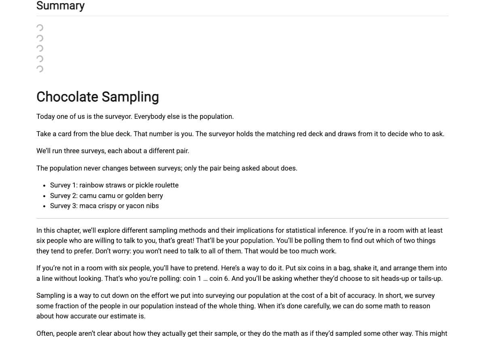
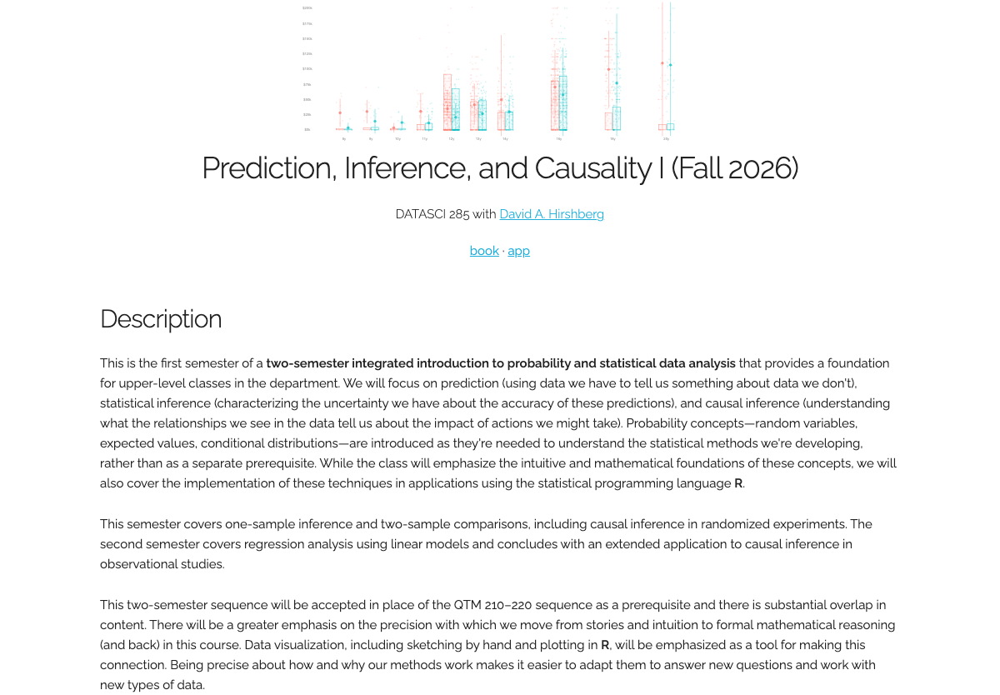

From an edit to a hand-in
Walked on 2026-09-19 against the running system.
Which surface each step was on. The editing, building and reading steps ran
on a copy — qtm285-book's source tree cloned to its own project, course,
assignment and student, on the same code, server and build executor, so nothing
here wrote to the class. The class site shown under Students see it is the
real one, qtm285.github.io/static/, read and not written.
Every number here was measured on that walk. Every screen is a capture of the surface named in its beat.
His loop
He edits a chapter
On screen. The chapter source in his editor, on disk, in the course repo.
What he does. Adds a sentence to chapters/chapter-sampling.qmd.
@@ -37,2 +37,4 @@ We'll run three surveys, each about a different pair.
+The population never changes between surveys; only the pair being asked about does.
+
- Survey 1: `r A1` or `r B1`
What changes. One file on disk. Nothing else yet.
It builds
On screen. The terminal, briefly, then nothing to watch.
What he does. Nothing further. The push is the whole action.
$ tlda project push
Source submitted.
push returned 4 seconds
rebuild settled 79 seconds
What changes. The submitted revision becomes the built book. Seventy-nine seconds from a saved file to a rebuilt chapter. The first build of a project is a cold full render and takes minutes; this is the loop he is actually in.
He sees it
On screen. The rebuilt chapter on the copy, the new sentence in place, the R
code around it evaluated — rainbow straws and pickle roulette are computed
values, not typed ones.

Captured on the walk copy — project qtm285-walk, chapter chapters/chapter-sampling.html.
What changes. The sentence he typed is in the book, in position, rendered.
Space. Same chapter, same scroll position he was reading.
The class side
Students see it
On screen. His class site at qtm285.github.io/static/ — title, the figure,
the description, and the two doors in: book and app.

Captured from https://qtm285.github.io/static/ — his real class site, read and
not written.
What they do. Click through to a chapter, or download the homework zip — every chapter, homework page and handout archive on it opens.
Space. New frame. The first screen seen from the student's side.
They hand in
On screen. Positron, the editor the class works in. View → Command Palette → Homework: Submit.
What happens. The command reads the server and assignment out of the homework's own front matter, zips the assignment folder, and posts it.
SERVER ACCEPTED
assignment walk-calibration
student walk-student
answers parsed 13
build success, 22 seconds later
What changes. Their work becomes a rendered document on the server, keyed to the thirteen answer blocks they filled in. No upload page, no attachment, no email.
What this page is
An acceptance test with pictures. Each step above was performed on the date given, not described.